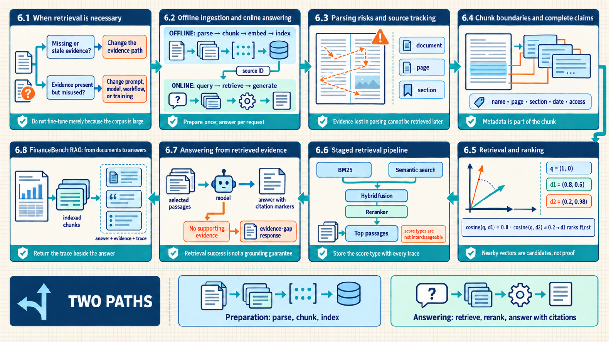
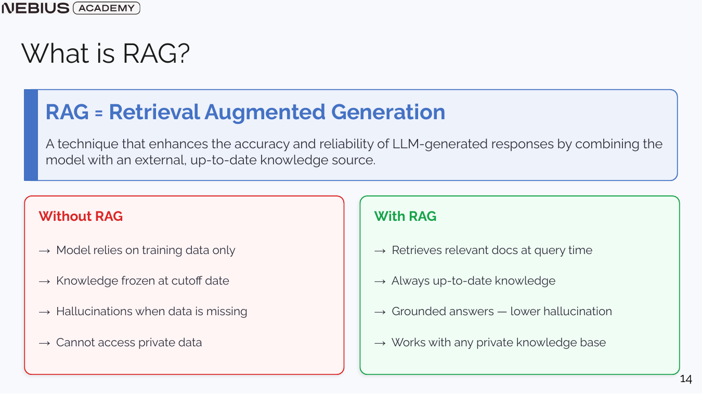
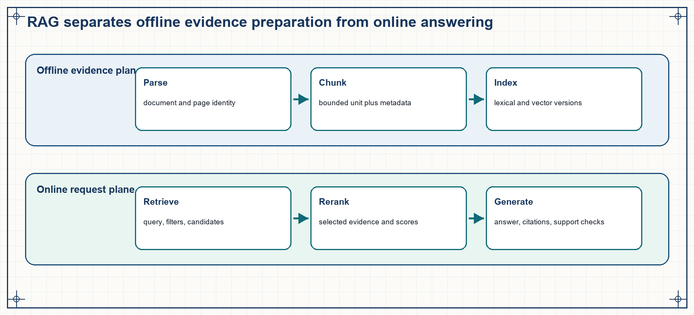
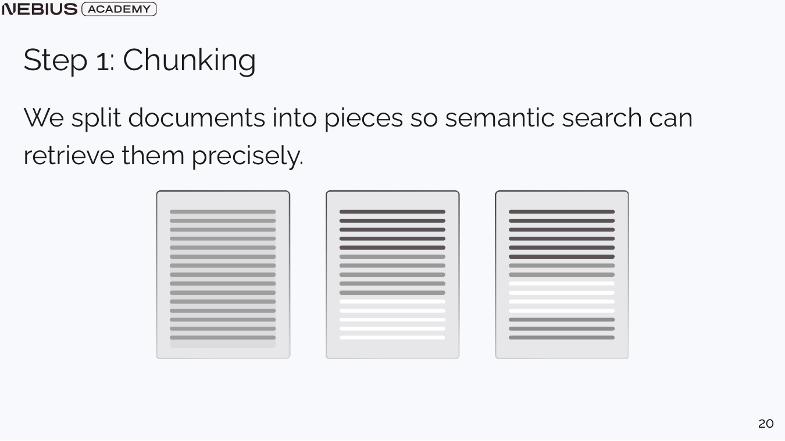
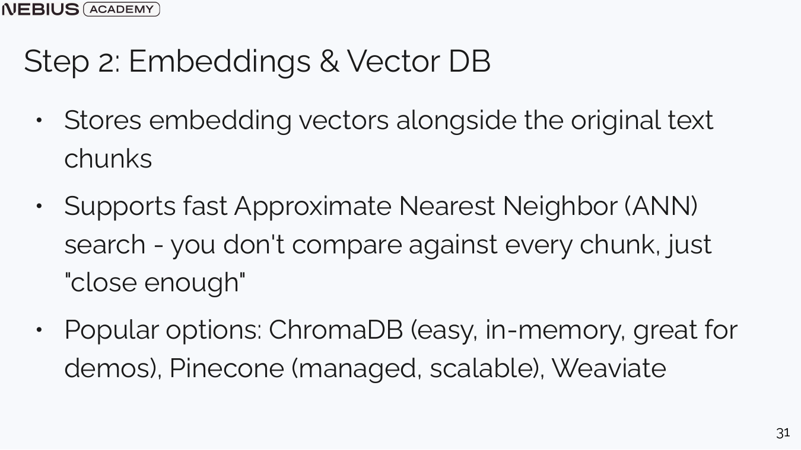
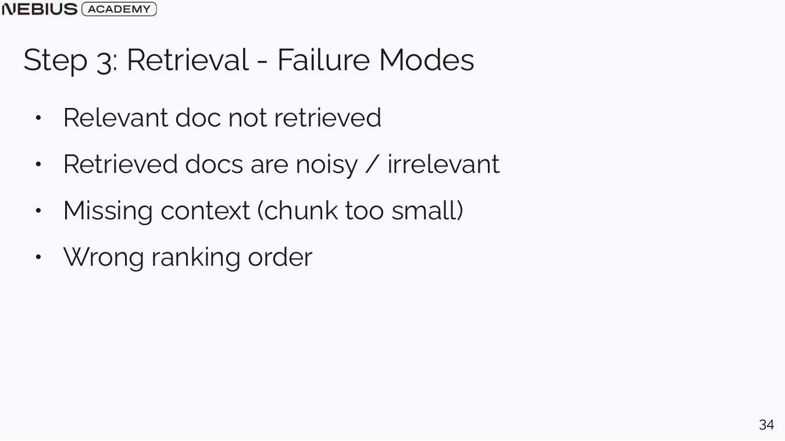
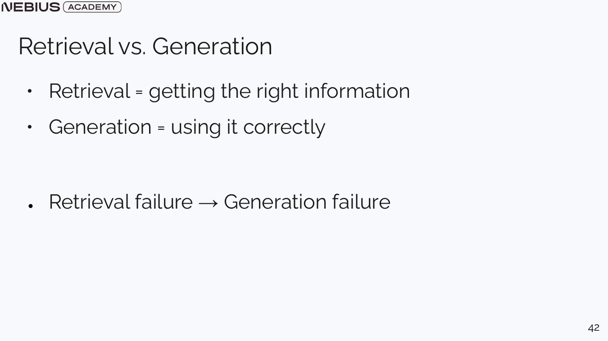

6 RAG: preparing and retrieving external evidence
Chapters 4 and 5 defined how to compare system versions and interpret metrics, benchmarks, model-judge results, and human review. Many product questions still depend on private, detailed, or changing facts that are absent from model weights. A Retrieval-Augmented Generation (RAG) system prepares source documents for search, selects relevant passages for each request, and gives those passages to the model before it generates an answer.

The pipeline is split into offline preparation and online retrieval so source identity, chunk quality, ranking, and generation inputs remain traceable.
6.1 When retrieval is necessary
A saved model version contains patterns and knowledge learned during training, but a product frequently requires current policy guidelines, private customer records, specific financial values, or citable references. Retrieval supplies those facts at request time, while fine-tuning and long-context prompting solve different problems.
RAG retrieves external evidence and injects it into context, directing the model to generate answers grounded in those sources.1 It is appropriate when knowledge changes, is private, must be attributable, or is too detailed to expect in weights. The model remains responsible for language generation, while the retrieval system becomes responsible for evidence selection.

RAG lowers unsupported-answer risk only when relevant evidence is retrieved and the generation step is instructed and evaluated to use it.
| Method | Changes | Strong fit | Main limitation |
|---|---|---|---|
| Prompting | Current request text | Task framing, output structure, a few supplied facts | Cannot add a large or changing knowledge base |
| RAG | Request-time context | Current, private, citable, or large document collections | Retrieval and context failures become new system risks |
| Fine-tuning | Model weights | Behavior, style, task specialization, repeated patterns | Poor fit for frequently changing factual storage |
| Long-context prompting | One large current input | Small document collection or one-off analysis | Cost, latency, attention dilution, and access filtering |
Decision rule
If the failure is missing or stale evidence, change the evidence path. If the evidence is present but the model applies the task incorrectly, change the prompt, model, workflow, or training. Do not fine-tune merely because the corpus is large.
6.2 Offline ingestion and online answering
Once retrieval is chosen, parsing, cleaning, and embedding the entire document collection on every request would repeat expensive work. The pipeline therefore separates offline ingestion from online query, retrieval, and generation.
Offline ingestion parses source documents. Before indexing, it splits text into passages and retains structural metadata. At runtime, the online pipeline turns the user request into a search query, retrieves candidate passages, and reranks them. The application places the selected passages in model context and verifies that the generated claims remain supported by evidence.

A source can exist in the reference data but fail during parsing, chunking, indexing, query formation, ranking, context assembly, or generation. The separation makes each failure measurable.
Locating a failure requires knowing which sources were available, how they were searched, and which source each retrieved chunk came from:
Corpus: The authorized collection of documents or records available to the retrieval system.
Index: A data structure that maps query representations to candidate source units. It may be lexical, vector-based, structured, or hybrid.
Metadata: Source identity and attributes stored with a chunk, such as document, page, section, date, company, permission, or content type.
The two execution paths must preserve complementary evidence and a shared source identity:
- Offline version evidence: parser, chunker, embedding model, index build time, source hashes, and access labels.
- Online request evidence: query text, filters, retrieved identifiers and scores, reranker version, selected context, model output, and citations.
- Data requirement: source identifiers must survive every stage so a generated citation can be checked against an actual retrieved unit.
After ingestion, the offline path stores normalized source units, chunk lineage, embeddings, index versions, and build-time quality checks. The online path begins with one request and produces a query, filters, ranked candidates, selected context, an answer, citations, and a trace under a latency budget.
The separation creates distinct service objectives. Offline quality concerns completeness, reproducibility, freshness, and deletion propagation. Online quality concerns retrieval relevance, authorization, latency, context capacity, and grounded generation. A shared source identifier connects the paths so an online citation can be traced to the exact indexed unit and original document.
6.3 Parsing risks and source tracking
The offline phase begins with authorized source files and must produce searchable text together with the document, page, and section where each piece came from. A parser can silently scramble multi-column pages, headers, tables, or right-to-left text, creating retrieval failures before embeddings are involved. Source inspection and layout-aware parsing precede chunking.
Document loaders must preserve page boundaries, document identifiers, and document layout hierarchies. PDF text extraction is not equivalent to reading order: visual columns, footnotes, tables, and scanned images can produce interleaved or missing text. Optical Character Recognition (OCR) is required for image-only pages, and a layout-aware parser may be needed to recover the reading order of complex documents.
- Document: In common RAG libraries, a text payload plus metadata. Depending on the loader, it represents a complete file, a single page, a section, or an individual record.
Parsing review
A parsing review compares raw document bytes, extracted text, page images, and structural metadata before chunk creation. It is useful when the reference documents contain scans, multiple columns, tables, headers, footers, or mixed reading directions.
Compare extracted text with representative rendered pages, measure empty or unusually short pages, and preserve page and section identifiers. A retriever cannot return evidence the parser omitted or corrupted.
Limitation: A text-only check cannot detect incorrect reading order or lost diagram meaning.
Preprocessing removes repetitive headers, navigation artifacts, and boilerplate, but must not remove qualifiers, measurement units, dates, or section headers. Every transformation should be reproducible from the original source and recorded in the index build manifest.
The parsing-review results and parser version become part of the ingestion record. Later retrieval experiments can then distinguish a search failure from evidence already lost during ingestion.
6.4 Chunk boundaries and complete claims
Parsing produces text with source boundaries and reading order. Retrieval rarely returns an entire long document. Instead, it needs units small enough to rank and large enough to preserve meaning. Chunking chooses those units, overlap, and metadata by the structure of the reference data and the questions users ask.
Chunk: The source unit placed in the index and later returned as evidence. Fixed token windows are simple and predictable. Recursive character splitting tries larger semantic separators before smaller ones. Structure-aware splitting uses headings, paragraphs, table rows, code functions, or legal clauses. Semantic splitting uses changes in embedding similarity as candidate boundaries.

Chunk size is not a formatting preference. It determines whether one retrieved unit contains the full answer, irrelevant neighboring text, or only an incomplete fragment. Dense X Retrieval2 found that single-claim, or proposition-level, units improved retrieval in its experiments, but it does not establish one best unit for every corpus. Representative questions can compare sentence, proposition, paragraph, table, figure, section, overlap, and parent-expansion choices.
Overlap copies boundary text into adjacent chunks so a claim crossing the split remains recoverable. Too much overlap increases index size and returns near-duplicates that crowd the context. Parent-child retrieval stores small units for matching but expands a selected child to a larger parent section for generation.
Evidence hit at k (Hit@k) records whether at least one labeled supporting unit appears among the first k retrieved results. The table uses it only as an early diagnostic name. Section 7.2 defines the formula and its limits.
| Chunk decision | Smaller value tends to | Larger value tends to | What to measure |
|---|---|---|---|
| Chunk size | Improve targeting but risk missing context | More context with additional noise and tokens | Evidence hit@k and grounded answer quality |
| Overlap | Reduce duplicates but expose boundary loss | More boundary preservation with duplicated evidence | Tokens duplicated across chunks by overlap; evidence hit@k; index size |
| Top-k retrieval | Lower context cost but miss evidence | Raise recall but increase noise | Recall/hit@k, faithfulness, latency |
| Parent expansion | Compact evidence set | Restore section context | Support completeness and prompt size |
Metadata is part of the chunk
Store document name, page, section path, date, and access attributes with the text. Trying to reconstruct that information after retrieval is unreliable and can create false citations.
6.5 Retrieval and ranking
Chunks define the evidence units available for ranking. Exact words may differ between a user question and a relevant chunk, so literal matching alone can miss paraphrases. An embedding model maps both to vectors, and a vector index returns nearby candidates under a chosen similarity measure.
Embedding model: A model that maps a text unit to a fixed-dimensional vector used for similarity search. A vector database stores the vectors with chunk text and metadata. At query time, the same embedding model converts the question to a vector and the index performs exact or Approximate Nearest Neighbor (ANN) search.

The index returns candidates that are close under the embedding model, not guaranteed answers. Filters and reranking apply product knowledge the embedding may not encode.
Cosine similarity: A measure based on the angle between a query vector and a chunk vector.
\[ \cos(q,d)=\frac{q\cdot d}{\sqrt{\sum_{j=1}^{n}q_j^2}\sqrt{\sum_{j=1}^{n}d_j^2}} \tag{6.1}\]
Here, \(q\) is the query vector, \(d\) is one chunk vector, \(j\) indexes their \(n\) coordinates, and the dot product measures alignment. Each square root is the vector’s Euclidean magnitude, so their product normalizes the score. A larger cosine value means the vectors point in a closer direction under this embedding model. When both vectors are normalized to length one, cosine similarity equals their dot product. It does not prove factual relevance or authorization.
Example calculation: Cosine similarity for two chunks
Use query q = (1, 0). Candidate d1 = (0.8, 0.6), and candidate d2 = (0.2, 0.98). Both candidates have norm approximately 1.
1. q dot d1 = 1 × 0.8 + 0 × 0.6 = 0.8, so cosine(q, d1) is 0.8. 2. q dot d2 = 1 × 0.2 + 0 × 0.98 = 0.2, so cosine(q, d2) is about 0.2.
Result: The vector search ranks d1 above d2 for this query.
Interpretation: The numeric ranking is valid only within the embedding model’s representation. A lexical identifier or date constraint may still require exact search or metadata filtering.
Embedding selection
Embedding selection considers the language, domain, and unit length represented by document chunks and user queries. It is useful when questions paraphrase relevant text or use conceptual rather than exact matching.
An evaluation compares candidate embedding models on labeled query-evidence pairs, with matching document and query embedding versions within each index. BEIR3 reports large differences across retrieval datasets and supports comparing methods by query and corpus type rather than assuming one family will win. Changing the embedding model changes the ranking space and normally requires rebuilding the vector index.
Limitation: Domain jargon, identifiers, code symbols, and numeric constraints may be represented poorly.
6.6 Staged retrieval pipeline
Vector search returns indexed chunks that are semantically similar to the question. A production question might also depend on exact identifiers, dates, and permissions. One embedding score cannot capture all these requirements. Production retrieval combines lexical matching, semantic search, metadata filters, diversity algorithms, and reranking models into a staged pipeline.
- BM25: A lexical retrieval function that rewards exact keyword matches. It gives rarer query terms more weight and common terms less weight, while accounting for term frequency and document length.4
- Semantic search: A retrieval method that finds evidence based on conceptual meaning using embeddings. The application runs this search before supplying the selected documents to the generation model.
- Hybrid retrieval: A method that combines BM25 keyword matching with semantic search scores to capture both exact terminology and conceptual paraphrases.
BM25 can miss paraphrases. Semantic search can miss exact numbers. Hybrid retrieval combines their candidate lists to cover both cases. This is a hypothesis to test, not an automatic improvement. An evaluation compares lexical-only, dense-only, fused, and reranked pipelines by query group, final answer quality, latency, and cost. Cormack and colleagues5 and Nogueira and colleagues6 provide research examples of fusion and reranking under their reported conditions.
After retrieval, the candidate set may need pruning to avoid redundant information.
- Maximum Marginal Relevance (MMR): A diversity algorithm that penalizes candidates that are too similar to documents already selected for the context window.
Reranker: A second-stage scorer that examines the query and each surviving candidate together, trading added latency for a more precise ordering.
For the question, “What was Acme’s FY2024 free cash flow?” a table row containing FY2024 may rank first under BM25. A prose summary saying “cash generation improved” may rank higher in semantic search. Hybrid retrieval keeps both. MMR helps the system select the table row and a distinct explanatory passage, rather than two copies of the same row. A reranker then places the passage it scores as most relevant first. The resulting trace shows why each passage was kept or moved.
Metadata filters should apply authorization, document date, company, language, or content type before context reaches the model. Maximum Marginal Relevance balances query similarity and redundancy so the result set covers distinct evidence.

Retrieval failures at different stages require different repairs. Increasing top-k cannot recover a document that was never parsed or indexed, and a better model cannot use evidence the retriever omitted.
- Normalize or rewrite the user question only when the rewrite preserves constraints and named entities.
- Apply authorization and hard metadata filters.
- Run lexical, semantic, structured, or hybrid candidate search appropriate to the query.
- Deduplicate and diversify candidates where repeated chunks consume the result set.
- Rerank the reduced candidate pool with a stronger query-document scorer when latency permits.
- Select context according to evidence coverage and token budget, preserving source identifiers.
Retrieval score semantics
Vector distance, cosine similarity, BM25 score, and reranker score are not interchangeable probabilities. Store the score type and model or index version with every trace.
6.7 Answering from retrieved evidence
Search and reranking have selected a small, authorized set of passages that the application may give to the model. The model can still ignore, misread, or overgeneralize that evidence while producing fluent prose. A grounded generation specification states the evidence boundary, citation format, missing-evidence behavior, and post-generation checks.
The generation prompt labels evidence blocks with stable source identifiers, instructs the model to cite factual claims, and allows explicit insufficient-evidence declarations. The output payload contains the generated text, cited identifiers, and an escalation flag. Application validation checks that every cited identifier belongs to the evidence supplied to the model.
A citation should identify both the document and page, or use a stable chunk ID. A page number alone is ambiguous when two documents have the same page number. Membership validation can reject an invented identifier, but it cannot prove that the cited passage supports the claim. ALCE7 evaluates citation correctness and completeness separately. A grounded application should therefore check whether each important claim follows from its cited span and whether important claims have citations.

A correct passage with an incorrect answer isolates generation. An unsupported answer after a missed passage isolates retrieval or corpus coverage first.
Even a relevant passage can lead to an incorrect or unsupported answer:
- Unsupported synthesis: the answer combines claims not stated by any selected source.
- Citation mismatch: an identifier is valid but the cited chunk does not support the attached sentence.
- Conflict suppression: the model chooses one of two conflicting documents without reporting the conflict.
- Instruction injection: retrieved text contains instructions that attempt to override application policy. Content can be authorized for the user to read while remaining untrusted as an instruction to the application. OWASP8 describes direct and indirect prompt injection, including instructions carried through external files and web pages.
- Answer drift: the answer addresses a related topic but not the user’s question.
Grounded generation
This grounding pattern binds the user query to retrieved evidence chunks and an auditable schema. It is useful when answers must be current, auditable, or limited to an authorized knowledge base.
It isolates untrusted evidence and requires a citation for each supported claim. It also keeps two checks distinct: whether the answer stays within that evidence, and whether it answers the question. Chapter 7 defines these checks as citation support, faithfulness, and answer relevance. Grounding changes a fluent answer into a claim that can be checked against the exact evidence shown to the model.
Limitation: The model can still misunderstand a source, and the reference data itself may be incomplete or wrong. RAGTruth9 documents unsupported and contradictory claims in evaluated RAG outputs, so retrieval success cannot be treated as a grounding guarantee.
6.8 FinanceBench RAG: from documents to answers
The RAG design identifies the component responsible for each stage and records its inputs and outputs. A financial-question answering example turns that architecture into executable stages and row-level records that can be evaluated later. It proceeds through a no-retrieval baseline, ingestion, retrieval, answering from selected passages, comparison, evaluation, and one controlled improvement.
The example uses questions and financial documents from FinanceBench10. A no-retrieval run establishes the baseline. The ingestion pipeline parses PDF pages with metadata attributes, partitions text via RecursiveCharacterTextSplitter, and embeds chunks into a FAISS index. The online path retrieves evidence and returns both the answer and its trace. Here, answer_with_rag is the application function that performs that online path. Its return value is a record, not only a sentence for the user. Comparison then separates answer correctness, faithfulness, and evidence-page hit.
Code example: 6.1. The ingestion path preserves page identity before splitting.
from langchain_community.document_loaders import PyPDFLoader
from langchain_text_splitters import RecursiveCharacterTextSplitter
from langchain_huggingface import HuggingFaceEmbeddings
from langchain_community.vectorstores import FAISS
pages = []
for pdf_path in financial_pdfs:
for page in PyPDFLoader(str(pdf_path)).load():
page.metadata.update({
"doc_name": pdf_path.name,
"company": infer_company(pdf_path),
"doc_period": infer_period(pdf_path),
"source_page": page.metadata["page"] + 1,
})
pages.append(page)
splitter = RecursiveCharacterTextSplitter(
chunk_size=1000,
chunk_overlap=150,
)
chunks = splitter.split_documents(pages)
embedding_model = HuggingFaceEmbeddings(
model_name="BAAI/bge-small-en-v1.5",
)
index = FAISS.from_documents(chunks, embedding_model)
index.save_local("financebench_faiss")page is the source evidence unit, chunks are retrievable children carrying inherited metadata, the BGE model identifier defines the vector space, and index stores search records.1112 The selected BAAI/bge-small-en-v1.5 model produces 384-value vectors. The listing does not request unit normalization, so the index record must preserve its distance rule rather than assuming that a returned distance is a cosine score. If unit normalization is enabled in another implementation, cosine similarity reduces to a dot product. The source_page field is converted to the one-based page number used by the assignment labels. Persist the source hashes, parser and splitter versions, metadata schema, embedding identifier, vector normalization setting, distance rule, and FAISS settings beside the index. The binary index alone is not reproducible evidence.
This abbreviated ingestion example assumes financial_pdfs is a collection of path-like PDF objects and that infer_company and infer_period return metadata from an approved source. Its expected result is an index whose chunks retain doc_name and a one-based source_page. The loader’s zero-based page value is never used as the display page.
This abbreviated online example depends on four application components: index returns candidate documents, bge_reranker returns (document, score) pairs, render_grounded_prompt formats the question and selected evidence, and generation_model returns an object with .text and .cited_pages. Their versions and interfaces belong in the run record.
Code example: 6.2. The online function returns answer evidence and trace objects, not prose alone.
def answer_with_rag(question, *, k=5):
retrieved = index.similarity_search_with_score(question, k=12)
reranked = bge_reranker.rerank(
question,
[doc for doc, _ in retrieved],
)[:k]
context = [
{
"chunk_text": doc.page_content,
"doc_name": doc.metadata["doc_name"],
"source_page": doc.metadata["source_page"],
"citation_id": f"{doc.metadata['doc_name']}#p{doc.metadata['source_page']}",
"reranker_score": score,
}
for doc, score in reranked
]
if not context:
return {
"question": question, "answer": None, "cited_pages": [],
"retrieved": [], "k": k, "status": "insufficient_evidence",
}
answer = generation_model(
render_grounded_prompt(question=question, evidence=context)
)
allowed_citations = {item["citation_id"] for item in context}
cited_pages = list(answer.cited_pages)
if not set(cited_pages) <= allowed_citations:
raise ValueError("Answer cited evidence that was not retrieved")
return {
"question": question,
"answer": answer.text,
"cited_pages": cited_pages,
"retrieved": context,
"k": k,
"status": "answered",
}On a successful retrieval the function returns the question, answer, cited pages, selected records, k, and an answered status. With no selected records it returns the same trace shape with answer set to None, cited_pages and retrieved empty, and status insufficient_evidence, without calling the generation model. The result structure preserves enough information for Chapter 7 to distinguish a missed evidence page from an answer that ignored retrieved evidence. The baseline and RAG outputs should share question identifiers so a row-level comparison remains possible. Chapter 12 reuses this interface rather than defining a second version of answer_with_rag.
Chapter conclusion
A complete RAG build records where each retrieved passage came from and returns a trace beside the answer. Chapter 7 defines the component metrics and experiments that show whether the pipeline improved.
Lewis, P., Perez, E., Piktus, A., Petroni, F., Karpukhin, V., Goyal, N., Küttler, H., Lewis, M., Yih, W., Rocktäschel, T., Riedel, S., & Kiela, D. (2020). Retrieval-augmented generation for knowledge-intensive NLP tasks. In Advances in Neural Information Processing Systems 33. https://arxiv.org/abs/2005.11401. Retrieved September 16, 2026. The paper combines parametric generation with retrieved non-parametric memory. It supports the mechanism, not every product control described in this chapter.↩︎
Chen, T., Wang, H., Chen, S., Yu, W., Ma, K., Zhao, X., Zhang, H., & Yu, D. (2023). Dense X retrieval: What retrieval granularity should we use? arXiv. https://arxiv.org/abs/2312.06648. Retrieved September 16, 2026. The experiments compare several retrieval units and report better results for propositions than passages under the tested settings. They do not establish one best unit or overlap setting for every corpus.↩︎
Thakur, N., Reimers, N., Rücklé, A., Srivastava, A., & Gurevych, I. (2021). BEIR: A heterogeneous benchmark for zero-shot evaluation of information retrieval models. In Advances in Neural Information Processing Systems 34. https://arxiv.org/abs/2104.08663. Retrieved September 16, 2026. BEIR reports substantial variation among methods and datasets. It does not predict which retriever will work best on a new private corpus.↩︎
Robertson, S., & Zaragoza, H. (2009). The probabilistic relevance framework: BM25 and beyond. Foundations and Trends in Information Retrieval, 3(4), 333–389. https://doi.org/10.1561/1500000019. Retrieved September 16, 2026. The review explains BM25’s inverse-document-frequency weighting, term-frequency saturation, and length normalization. Local tuning and corpus behavior still need evaluation.↩︎
Cormack, G. V., Clarke, C. L. A., & Büttcher, S. (2009). Reciprocal rank fusion outperforms Condorcet and individual rank learning methods. In Proceedings of the 32nd International ACM SIGIR Conference on Research and Development in Information Retrieval (pp. 758–759). ACM. https://doi.org/10.1145/1571941.1572114. Retrieved September 16, 2026. The paper defines Reciprocal Rank Fusion and reports gains over the methods compared there. The DOI is valid, although the publisher returned HTTP 403 to the automated retrieval check. The study does not guarantee better end-to-end RAG answers.↩︎
Nogueira, R., Jiang, Z., Pradeep, R., & Lin, J. (2020). Document ranking with a pretrained sequence-to-sequence model. In Findings of the Association for Computational Linguistics: EMNLP 2020 (pp. 708–718). Association for Computational Linguistics. https://doi.org/10.18653/v1/2020.findings-emnlp.63. Retrieved September 16, 2026. The paper scores query-document pairs and reranks candidates, with improvements on its evaluation tasks. Those results do not remove the added inference cost or guarantee gains on a new corpus.↩︎
Gao, T., Yen, H., Yu, J., & Chen, D. (2023). Enabling large language models to generate text with citations. In Proceedings of the 2023 Conference on Empirical Methods in Natural Language Processing (pp. 6465–6488). Association for Computational Linguistics. https://doi.org/10.18653/v1/2023.emnlp-main.398. Retrieved September 16, 2026. ALCE separates citation correctness from citation completeness. It does not establish the chapter’s stable chunk-identifier rule or replace domain review for high-impact claims.↩︎
OWASP Gen AI Security Project. (2025). LLM01:2025 prompt injection. https://genai.owasp.org/llmrisk/llm01-prompt-injection/. Retrieved September 16, 2026. The guidance distinguishes direct and indirect prompt injection and lists external content as a carrier. It is security guidance, not evidence that one mitigation is complete.↩︎
Niu, C., Wu, Y., Zhu, J., Xu, S., Shum, K., Zhong, R., Song, J., & Zhang, T. (2024). RAGTruth: A hallucination corpus for developing trustworthy retrieval-augmented language models. In Proceedings of the 62nd Annual Meeting of the Association for Computational Linguistics, Volume 1: Long Papers (pp. 10862–10878). Association for Computational Linguistics. https://doi.org/10.18653/v1/2024.acl-long.585. Retrieved September 16, 2026. The corpus contains unsupported and contradictory claims from evaluated RAG outputs. It shows residual grounding failures, not that every retrieved answer is unreliable.↩︎
Islam, P., Kannappan, A., Kiela, D., Qian, R., Scherrer, N., & Vidgen, B. (2023). FinanceBench: A new benchmark for financial question answering. arXiv. https://arxiv.org/abs/2311.11944. Retrieved September 16, 2026. The paper introduces a financial question-answering benchmark over public-company documents with evidence. It does not validate this chapter’s local implementation.↩︎
Xiao, S., Liu, Z., Zhang, P., Muennighoff, N., Lian, D., & Nie, J.-Y. (2023). C-Pack: Packaged resources to advance general Chinese embedding. arXiv. https://arxiv.org/abs/2309.07597. Retrieved September 16, 2026. The source documents the BGE model family and reported embedding and reranking results. The rule to rebuild an index after changing its embedding model follows from index construction, not from the paper alone.↩︎
Meta AI. (2026). Faiss 1.15.0 [Software documentation]. https://github.com/facebookresearch/faiss/tree/v1.15.0. Retrieved September 16, 2026. The versioned documentation describes similarity search and clustering of dense vectors. It supports the library capability, not the chapter’s reproducibility rules. ↩︎